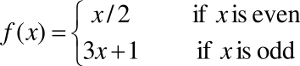

Go up to the Labs table of contents page
This lab is one of two labs meant to familiarize you with the process of writing, assembling, and linking assembly language code. The purposes of the in-lab and post-lab activities are to investigate how various C++ language features are implemented at the assembly level.
The Intel x86 assembly language is currently one of the most popular assembly languages and runs on many architectures from the x86 line through the Pentium 4. It is a CISC instruction set that has been extended multiple times (e.g. MMX) into a larger instruction set.
#include <string.h>.You may want to reference the “Compiling Assembly With C++” and “Vecsum” sections from the previous x86 lab.
The 3x+1 conjecture (also called the Collatz conjecture) is an open problem in mathematics, meaning that it has not yet been proven to be true. The conjecture states that if you take any positive integer, you can repeatedly apply the following function to it:

The conjecture is that eventually, the result will reach 1. For example, consider x = 13:
Note that this took 9 steps to reach the value 1. And it also shows that this conjecture is true for a number of other values (2, 4, 5, 8, 10, 16, 20, and 40).
An image (from Wikipedia) shows how paths of most integers less than 50 converge to 1.
This conjecture has been proven for all integers up to at least 5.6 * 1013, but has not yet been proven for all (positive) integers. It is widely believed to be true, however. If you are interested, more information on this conjecture can be found here.
As the conjecture has been proven for numbers up to 5.6 * 1013, and our 32-bit machines can only count as high as 4.3 * 109 (that’s 232), we can safely assume that it is true for all of the input values that we will use.
Your task is to write a routine, called threexplusone, that will return the number of steps required to reach 1. An input of 13 takes 9 steps, as shown above. The Wikipedia page shows a few other input sizes and the number of steps: an input of 6 takes 8 steps; an input of 14 takes 17 steps; an input of 27 takes 111 steps. If the input is 1, the output should be zero. Your program need not consider values of zero or -1 (we will never test those values, as the conjecture does not apply in those cases).
This routine MUST call itself recursively using the proper C-style calling convention. The assembly code should be in a threexplusone.s file. You will need to write a C++ file that (called threexinput.cpp) that calls the subroutine and prints out the result. If you write your function so that it is an iterative solution, you will not receive credit for this pre-lab.
The routine MUST take only ONE parameter – the number that you are inputting into the conjecture (13, in the example above), and must return the count of the number of steps taken, as per the C calling convention.
Once the subroutine is done, you will need to optimize it as much as possible. With the exceptions listed below, any optimization is valid, as long as it computes the correct result. The grade on this pre-lab will be based both on the correctness of the subroutine and the optimizations included. The only exceptions to the optimizations are that it must still be a recursive subroutine, and must still follow the proper C style calling conventions.
What optimizations do you use? First, try to figure out how you can write the same routine using fewer x86 instructions. Some optimizations, such as using the lea instruction (which can do addition and multiplication in one instruction) to quickly add or multiply numbers, are specific to the x86 architecture. Also take a look here for various optimizations. You will need to include at least one optimization beyond just figuring out how to write your subroutine with fewer instructions. You should put the optimizations used as a comment in the beginning of your assembly file.
Note that we, too, can write the function in C++ and compile it with -O2 --S --masm=intel. And we will be looking at that assembly code when we grade the pre-lab. If you write your program this way, it constitutes an honor violation, so please hand-code the assembly yourself.
In an effort to time how fast your assembly routine runs, you should download the timer code from the hash table lab (lab 6: timer.cpp (src) and timer.h (src)). In your threexinput.cpp file, you will need to perform the following steps:
You can assume that both x and n are positive integers. See the hash lab (lab 6) for details as to how to use the timer code. Your program should print out the number of steps for the given input, and the average time taken per function call. You should use an appropriate precision number to make sure you don’t report zero when you divide the total time by the number of runs. Your timer code should only include the loop of n times that calls the routine with x as the parameter. Nothing else (including the print statement) should be inside the timer code.
You may find the cdq instruction useful – do a Google search for ‘cdq x86’ or ‘cdq intel’.
You must list, as comments in your assembly file, the optimizations that you used! Just a brief description of what optimizations you used is fine.
See the last lab for details, but all code must be submitted to run under Linux, which is the platform that does the compilation on the submission system.
Read the C tutorial. You will need to implement the linkedlist.c program for the post-lab, not for the pre-lab.
Your code will be compiled with make. See the last lab for a sample Makefile that will compile assembly.
Come to lab with a functioning version of the pre-lab, and be prepared to demonstrate that you understand how to build and run the pre-lab programs. If you cannot, work through the tutorial during lab. If you are unsure about any part of the pre-lab, talk to a TA. The in-lab will ask you to write C++ code and examine the generated assembly language for a variety of topics.
You should be able to explain and write recursive functions for the final exam, so make sure that you understand how to implement the pre-lab program. Speak to a TA if you have any questions.
The general activity of this in-lab will be to write small snippets of C++ code, compile them so that you can look at the generated assembly code, then make modifications and recompile as needed in order to deduce the representation of a number of C++ constructs, listed below. Remember that we are compiling using g++ (g++ -S -masm=intel), and not clang++.
For the in-lab, you will need to work on at least one of the items in the list below – note that this is a different list than the previous lab. You will need to tackle two of the more complex items from the list. Keep working on more items as time permits, as you will have time to finish addressing the problems in your final post-lab report. You should be prepared to explain the appropriate items from the list to the TA.
The deliverable for the in-lab is a PDF document named inlab9.pdf. It must be in PDF format! See How to convert a file to PDF page for details about creating a PDF file.
In your report, you should explain something from at least one item in the list in the in-lab report. Note that for the post-lab, you will have to have two of the items fully explained, but you need only get through one for the in-lab. Your report would presumably include the code snippets (both C++ and assembly) that you generated during lab, images, screen shots, results, etc.
Recall that using the -S flag with g++ will generate the assembly code. You will also want to use the -masm=intel flag.
-O2 compiler flag. Can you make any guesses as to why the optimized code looks as it does? What is being optimized? Be sure to show your original sample code as well as the optimized version. Try loops and function calls to see what “optimizing” does. Be aware that if instructions are “not necessary” to the final output of the program then they may be optimized away completely! This does not lead to very interesting comparisons. Describe at least four (non-trivial) differences you see between ‘normal’ code and optimized code.Read the C tutorial. You will need to implement the linkedlist.c program.
Explore, investigate, and understand two of the four items from the in-lab list. Be able to answer “how” and possibly “why” for each item. Use test cases and the debugger as resources. Additionally use resources other than yourself (e.g. books, Web, etc.). Be sure to credit these sources. You must use (and cite!) additional resources for this!
Prepare a report that explains your findings. Follow the guidelines in the Post-lab Report Guidelines section from the previous lab. Address the following: How the compiler implements the construct at the machine and assembly levels. What leads you to this conclusion? You must show evidence of this behavior in the form of assembly code, C++, screenshots, memory dumps, manual quotations, output, etc. Also include where you found the information that lead to your conclusion. (i.e. your sources).
The deliverable for the in-lab is a Word document named postlab9.pdf. It must be in PDF format! See [How to convert a file to PDF] for details.
See the section in the previous lab for these tips.
See the section in the previous lab for these guidelines.
We want you to investigate the particular topic area from the given list, write code to discover the answers, and learn about this topic on your own. The questions that we pose are just meant to get you thinking about the possible ramifications of a given question. They aren’t meant to be specific questions that necessarily need answering one at a time.
As with the previous lab, I would expect the explanation of each item (you have to do two items) to be a page or two long, including embedded code snippets and screenshots (obviously, we want a reasonable amount of English text here – if you do a lot of screen shots, then your total length will be a bit longer). Did you investigate the topic? Did you write code to discover what you didn’t know? Was this written in a reasonably readable format? This is what we are looking for.
This is somewhat vague, and purposely so – research is often vague. If we told you exactly what to write, then there wouldn’t be much discovery of that on your part, which would defeat the whole point of this lab.
We are not looking for you to spend hours and hours and hours on this! A page or two per list item (and you have to do two of them) - which means your final report needs to be 2-4 pages long. Keep in mind if you have a lot of screenshots, that doesn’t count much towards that page limit.
The grading will be based on a set of points that we would expect you to discover when investigating a given topic. Your grade will be based mostly on how well you hit those points. A small portion of your grade will be based on the overall report presentation and written ability (while we are a computer science class, we expect you to be able to write in English to some extent!).
{kind=link}